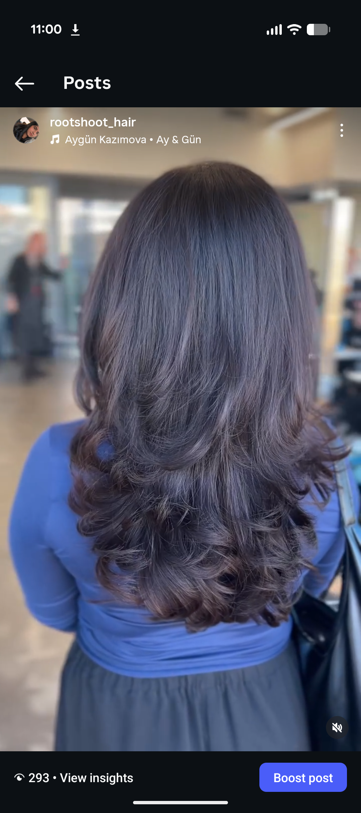
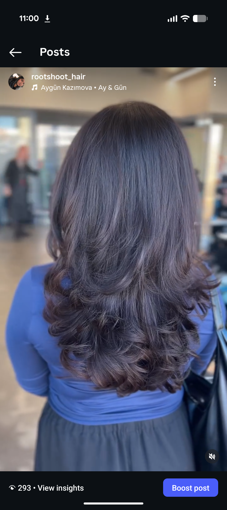

MY ACHIEVEMENTS
MC College Diploma Hairstyling
Computer Engineering Technician
Barbicide
CARRER SKILLS
Creativity: I enjoy experimenting with new styles, colors, and techniques, which helps me bring a fresh and artistic approach to hairstyling.
Strong Communication Skills: I listen closely to clients’ needs and explain services clearly to ensure we share the same vision.
Professionalism: I maintain a clean workspace, follow salon policies, and treat every client with respect
Knowledge of proper shampooing, conditioning, scalp care, and product application.Experience in blow-drying, curling, straightening, and styling for everyday wear and special occasions.
Teamwork
Teamwork: I work well with stylists, apprentices, and salon staff to keep the salon running smoothly.
Personal Characterstics
Dependability: Always reliable, punctual, and consistent with responsibilities and commitments. Self-Motivation: Driven to improve skills, learn new techniques, and take initiative without needing supervision.Accountability: Takes responsibility for actions, learns from mistakes, and strives for continual improvement. Adaptability: Handles change easily and adjusts to different clients, tasks, or salon situations. Stress Management: Stays calm and focused during busy or high-pressure times, such as back-to-back clients.
Personal interests
DIn my free time, I enjoy expressing my creativity through activities like makeup, fashion, and experimenting with new hairstyles. I also love listening to music, spending time with friends and family.I love expressing myself through painting and relaxing with a good book. MY favourite food is Italian Cuisine. I would love to visit italy one day and try their authentic food. My favourite season is fall season" I just love pumpkin era.
My Work
 

WORDS FROM CLIENTS
“had an amazing experience getting my hair cut and colored! The service was exceptional from start to finish. The stylist(Ranveer) really took the time to understand what I wanted and offered great suggestions that suited my style. The haircut is perfect—clean, fresh, and exactly the shape I was looking for❤️ Thankyou ranveer- MANSI ”
“Ranveer was efficient and professional. Really made the service comfortable- BOB NINJA ”